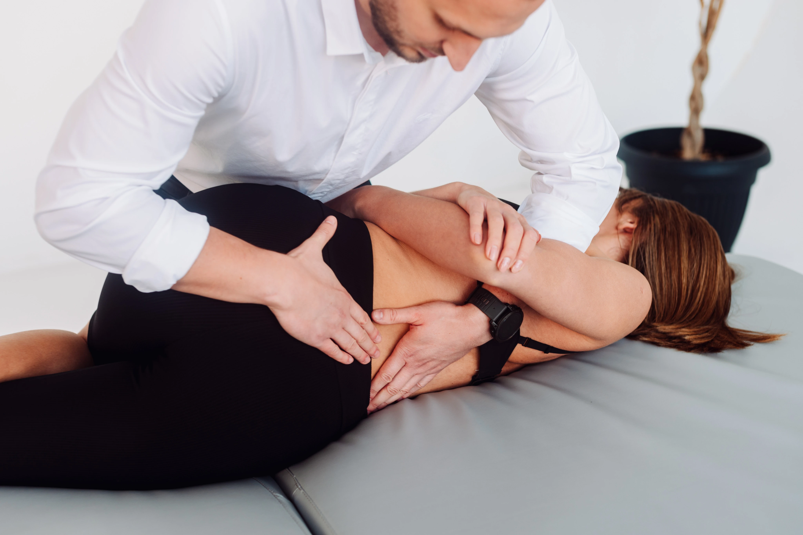

Czy odczuwasz ból pleców, dyskomfort w krzyżu lub pieczenie, które uniemożliwiają codzienne funkcjonowanie? W Uzdrovisku w Poznaniu oferujemy nowoczesne, skuteczne podejście do problemów z kręgosłupem. Działamy holistycznie, a współpracę z pacjentem rozpoczynamy od znalezienia przyczyn dolegliwości po to, by w ramach terapii skupić się na ich wyeliminowaniu, a nie zwalczać wyłącznie objawy.
Naszym celem jest nie tylko przyniesienie Ci ulgi w bólu, ale także trwałe poprawienie jakości Twojego życia dzięki skutecznej fizjoterapii oraz edukacji pacjentów. Doświadczony zespół specjalistów dobierze indywidualny plan leczenia pod kątem rodzaju bólu kręgosłupa, z jakim się zmagasz, a dzięki fachowo prowadzonej terapii pomoże Ci wrócić do pełnej sprawności.
Ból kręgosłupa to problem, z którym zmaga się coraz więcej osób. Najczęściej jego przyczyną jest siedzący tryb życia, nadmierne obciążenia fizyczne lub niewłaściwa postawa ciała. Nie bez znaczenia są również urazy mechaniczne, schorzenia przewlekłe, takie jak dyskopatia, czy nawet stres, który wpływa na napięcie mięśniowe w obrębie pleców.
Każdy przypadek jest jednak indywidualny, dlatego w Uzdrovisku w Poznaniu przeprowadzamy dokładną diagnostykę, by zidentyfikować źródło problemu i zaproponować najbardziej efektywną formę terapii dla różnych rodzajów bólu kręgosłupa.
Problemy z kręgosłupem objawiają się na wiele sposobów. Może to być ból wzdłuż kręgosłupa, pieczenie pleców, ograniczona ruchomość czy też promieniowanie bólu do innych części ciała, takich jak kończyny. Szczególnie dokuczliwe mogą być przewlekłe dolegliwości, takie jak ciągły ból pleców czy ból całych pleców. Objawy te często utrudniają wykonywanie codziennych czynności, dlatego nie należy ich ignorować. Wczesna interwencja pozwala skuteczniej rozwiązać problem i zapobiec jego pogłębianiu.
W Uzdrovisko Poznań stosujemy nowoczesne i sprawdzone metody leczenia, które przynoszą trwałe efekty oraz ulgę w bólu grzbietu.
Jest to unikalna forma terapii manualnej, która pozwala na oddziaływanie nie tylko na układ mięśniowo-szkieletowy, ale także na organy wewnętrzne i struktury powiązane anatomicznie oraz fizjologicznie. Dzięki temu zabiegowi możemy poprawić mikrokrążenie, zmniejszyć napięcia w tkankach powięziowych i przywrócić równowagę w autonomicznym układzie nerwowym. To podejście jest szczególnie skuteczne w rozwiązywaniu problemów bólowych obejmujących właśnie kręgosłup.
Indywidualnie dobrane ćwiczenia pod okiem specjalisty pomagają wzmocnić mięśnie stabilizujące kręgosłup, poprawić postawę i zwiększyć ogólną sprawność. Regularny trening medyczny zapobiega nawrotom dolegliwości i wzmacnia cały aparat ruchu.
Ta metoda wykorzystuje połączenie zasad tradycyjnej akupunktury z nowoczesną technologią. Stymuluje procesy regeneracyjne w tkankach, przynosząc ulgę w bólu i poprawiając funkcjonowanie organizmu.
Jeżeli odczuwasz przewlekły, ciągły ból pleców, pieczenie w okolicy kręgosłupa, sztywność lub ograniczenia w ruchu, warto zasięgnąć porady specjalisty. Szczególnie niepokojące są objawy, które utrzymują się przez dłuższy czas lub nawracają. Wczesna diagnoza i wdrożenie terapii pozwolą uniknąć poważniejszych problemów zdrowotnych. Pamiętaj - nie musisz, a nawet nie powinieneś funkcjonować z bólem!
Nasi pacjenci często podkreślają i doceniają:
„Dzięki terapii w Uzdrovisku mogę znów cieszyć się aktywnością fizyczną, a ból kręgosłupa to już tylko wspomnienie” – to jedna z wielu opinii, które motywują nas do dalszej pracy.
Nie pozwól, by ból pleców ograniczał Twoją aktywność, zabierał radość życia i wymuszał zmianę pasji czy przyzwyczajeń. Skontaktuj się z nami, by skorzystać z profesjonalnej diagnostyki i terapii.
Co mówią o nas pacjenci